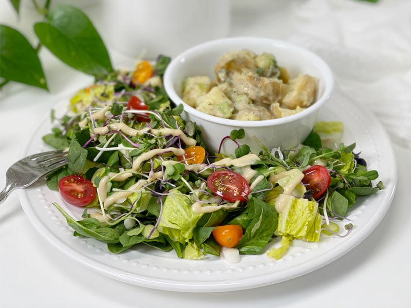

Fresh Salad with Chunky Potato Salad | Plates of Inspiration
A salad is a salad, but potato salad…that’s something I might arm wrestle over. I am over the moon in love with this bowl of Chunky Potato Salad. I was excited for breakfast, but I was pacing the floor waiting for lunch to roll around. Growing up, I would spend the summers with my great-grandparents. They lived in a tiny town in North Dakota. Every day at 8:00 a.m., 12:00 p.m., and at 6:00 p.m., a town whistle blew, telling you it was time to eat! I lived by those whistles. So when it came for today’s lunch, I ran to the kitchen when my internal whistle went off!

This meal is gluten-free, vegan, oil-free, nut-free, sugar-free! Where did you get your nutrients today?
© AmieSue.com